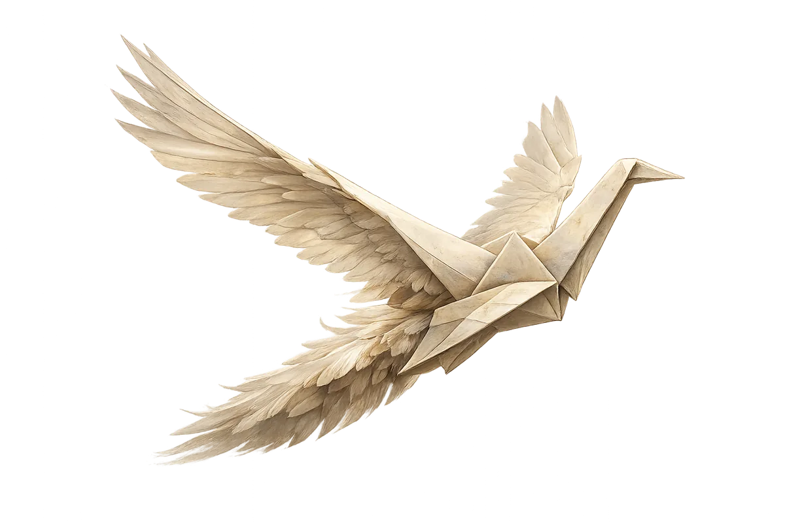
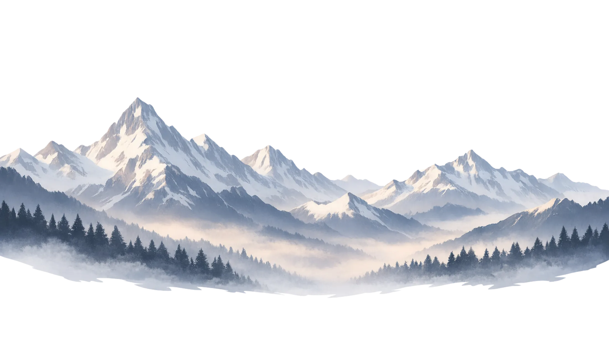

Mika Maria Schöberl
*1989
Mika Maria Schöberl verbindet als Lehrer*in, Künstler*in, Musikwissenschaftler*in und Heilpraktiker*in auf einzigartige Weise Kreativität, Theologie, Pädagogik, Natur und Gesundheit.
Sein kreativer, interdisziplinärer Ansatz ist von der tiefen Überzeugung geprägt, dass „alles mit allem verbunden" ist — er möchte seine Leserinnen und Leser inspirieren, ihren eigenen Weg zu einem authentischen Selbstausdruck zu finden.
Von früher Kindheit an übte die Natur eine tiefe Faszination auf mich aus — ihre inhärente Ordnung, ihre vielfältigen Erscheinungsformen und ihre künstlerische Interpretation durch Meister verschiedener Epochen.
Besonders in den Lehren Hildegard von Bingens entdeckte ich die harmonische Verschmelzung von Naturkunde, Musik und Theologie. Ihr ganzheitliches Wirken als Universalgelehrte offenbarte mir die Liebe zum lebenslangen Staunen.
Unterstützt durch engagierte Lehrer*innen, die meine Ambitionen förderten, erkannte ich den unschätzbaren Wert exzellenter Pädagogik.
Bachelor in Musikwissenschaft und Kunst/Musik/Theater, gefolgt von einem Master in Musikwissenschaft. In der Masterarbeit erforschte er das „Gesamtkunstwerk aus psychoanalytischer Perspektive" und die psychologischen Dimensionen menschlicher Kreativität.
Intensive Ausbildung zur*zum Heilpraktiker*in mit Schwerpunkt auf den Methoden der traditionellen europäischen Klosterheilkunde.
Ausbildung zur*zum Heilpraktiker*in für Psychotherapie, ergänzt durch Weiterbildungen in psychologischer Beratung und Gesprächstherapie.
Lehramtsstudium mit Schwerpunkt „evangelische Religionslehre/Theologie" — eine Vertiefung der Auseinandersetzung mit grundlegenden Fragen zu Sinn und Sein.



Starte
das Gespräch.
Du möchtest mehr erfahren, eine Zusammenarbeit besprechen oder einfach in Verbindung treten? Ich freue mich auf deine Nachricht — aus München und überall.
kontakt@funkenfangen.comAntwort innerhalb von 48 Stunden · München · auch online möglich
